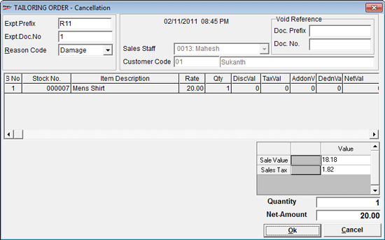

Service orders generated earlier can be cancelled (voided) through this option. When you cancel a service order, a void service order record is created in the database. This void service order cannot be recalled during billing.
The TAILORING ORDER window is displayed.

To delete a Service Order, the document prefix, document number are to be entered and the reason for cancellation has to be selected.
The current Shoper date is displayed, which is considered as the cancellation date of the service order.
Expt. Prefix: Enter the expected transaction prefix for the service order to be cancelled.
Expt. Doc. No.: Enter the number of the expected transaction service order to be cancelled.
Reason Code: Select the appropriate reason for voiding the service order
Sales Staff: The code and name of the Sales Staff who cancelled the service order is displayed
Customer Code: The code and the name of the customer are displayed.
The stock item details in the service order are displayed in the grid- S No., Stock No., Item Description, Rate, Qty, DiscVal, TaxVal, AddonVal, DednVal and NetVal are displayed.
Void Reference
Doc. Prefix: The document prefix is displayed
Doc. No.: The document number is displayed
Sale Value: The total sales value of the cancelled service order transaction is displayed.
Sales Tax: The total value of the sales tax charged is displayed.
Quantity: The quantity of the cancelled service order is displayed.
Net-Amount: The net sales value of the cancelled service order is displayed.